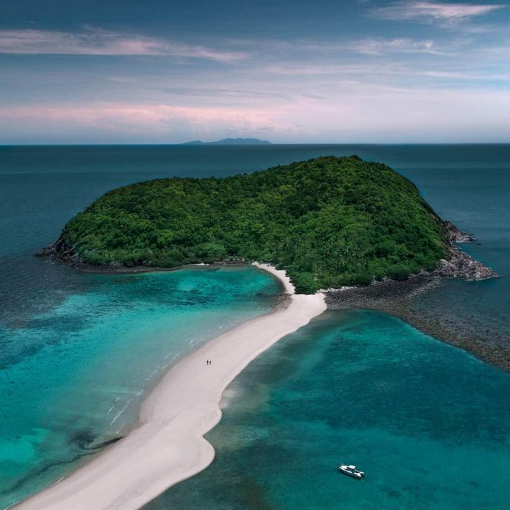
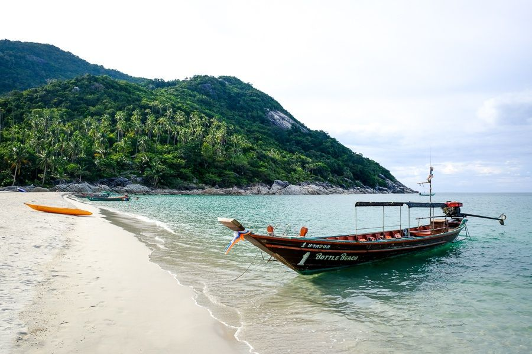

Best Beaches in Koh Phangan (2026): Swimming, Snorkelling, Sunsets & Hidden Bays
The best beaches in Koh Phangan: Haad Yao for all-round days, Mae Haad for snorkelling, Hin Kong for sunsets and Bottle Beach for seclusion.
Editorial review by Bruno Potier
Koh Phangan is home to some of Thailand's most beautiful beaches — but there is no single "best" one. Some are made for swimming in calm turquoise water. Others are known for their sunsets, lively beach cafés or coral reefs just offshore. Some suit families with young children; others reward anyone willing to travel a little further for complete quiet.
That's why we haven't ranked the island's beaches from one to twenty. Instead, this guide is built around a simple idea: choose the beach that matches the kind of day you want.
What are the best beaches in Koh Phangan? For an all-round beach day, go to Haad Yao; for swimming, Thong Nai Pan Noi; for snorkelling, Mae Haad; for sunsets, Hin Kong; for families, Haad Salad; for couples, Secret Beach; and for seclusion, Bottle Beach.
Over the years we've explored every corner of the island, returning to many beaches in different seasons, tides and weather. We've combined that with local knowledge and feedback from residents and long-term visitors. Rather than simply listing beaches, we explain what makes each one distinct, what to expect before you go, and who it suits best — along with nearby restaurants and where to stay, so you can plan a whole day around each one.
Quick Picks: Which Beach Is Right for You?
There isn't one best beach in Koh Phangan — it depends on the experience you're after. Use these quick picks to find the one that matches your perfect day.
| Looking for… | Top pick | Why we chose it |
|---|---|---|
| Best overall beach | Haad Yao | The island's best all-round beach: swimming, scenery, beachfront restaurants and easy access. |
| Best for swimming | Thong Nai Pan Noi | Calm, sheltered water and one of the island's most reliable swimming beaches year-round. |
| Best for snorkelling | Mae Haad | Home to Koh Ma and the island's most accessible coral reef, straight from the shore. |
| Best sunset beach | Hin Kong | Spectacular west-coast sunsets, a relaxed mood and some of the island's finest restaurants and bars. |
| Best beach restaurants | Haad Yao | A superb run of beachfront cafés and restaurants right on the sand. |
| Best hidden beach | Bottle Beach | A beautiful bay wrapped in jungle, rewarding those willing to make the journey. |
| Best for families | Haad Salad | Calm, shallow water, soft sand and a peaceful atmosphere. |
| Best for couples | Secret Beach (Haad Son) | A picturesque tropical cove with beautiful sunsets and a romantic feel. |
| Best luxury beach | Thong Nai Pan Noi | Several of the island's finest beachfront resorts in one of its most beautiful bays. |
| Best Full Moon beach | Haad Rin Nok | World-famous for the Full Moon Party, yet a lovely swimming beach outside party nights. |
Editor's Choice
Not every beach offers the same experience. These stand out in their category and are worth planning your day around.
- Best overall beach — Haad Yao
- Best swimming beach — Thong Nai Pan Noi
- Best snorkelling beach — Mae Haad
- Best sunset beach — Hin Kong
- Best hidden beach — Bottle Beach
- Best beach for families — Haad Salad
- Best beach for couples — Secret Beach
- Best beach restaurants — Haad Yao
- Best luxury beach — Thong Nai Pan Noi
Choose Your Beach First
Most visitors ask, "Which is the best beach in Koh Phangan?" A better question is, "What kind of beach day am I looking for?" Choosing the right beach will shape your day far more than following a generic top-ten list.
| If you're looking for… | We recommend… |
|---|---|
| The best swimming | Thong Nai Pan Noi · Haad Yao · Haad Salad |
| Snorkelling | Mae Haad · Haad Khom · Bottle Beach |
| Spectacular sunsets | Hin Kong · Sri Thanu · Secret Beach · Zen Beach |
| Beachfront restaurants | Haad Yao · Sri Thanu · Hin Kong |
| Family-friendly beaches | Thong Nai Pan Noi · Haad Salad · Haad Yao |
| Romantic beaches | Secret Beach · Bottle Beach · Haad Khom |
| Peace and seclusion | Than Sadet · Bottle Beach · Haad Khom |
| Beach bars and atmosphere | Haad Rin · Zen Beach · Baan Tai |
| Photography | Bottle Beach · Mae Haad · Thong Nai Pan |
| Easy access | Haad Yao · Haad Salad · Hin Kong |
Koh Phangan's Coastlines at a Glance
Although Koh Phangan is relatively small, each coastline has its own character. Understanding the island's geography helps you choose the right beaches and spend less time on the road.
West Coast — best for sunsets, restaurants, cafés, wellness and first-time visitors. The island's most versatile region, combining good beaches with the best food and the famous sunsets. Highlights: Hin Kong · Sri Thanu · Haad Yao · Haad Salad · Mae Haad.
North Coast — best for nature, snorkelling and quiet beaches. Slower and more authentic, with fishing villages, secluded coves and excellent snorkelling. Highlights: Chaloklum · Malibu Beach · Haad Khom · Thong Lang.
East Coast — best for luxury, swimming, scenic bays and relaxation. Less developed than the west, with some of the island's most beautiful bays and luxury beachfront resorts. Highlights: Bottle Beach · Thong Nai Pan Noi · Thong Nai Pan Yai · Than Sadet.
South Coast — best for nightlife, the Full Moon Party and easy access from the ferry. Practical convenience alongside the island's famous nightlife, with quieter stretches nearby. Highlights: Ao Nai Wok · Ao Bang Charu · Baan Tai · Haad Rin Nok · Leela Beach.
Compare Koh Phangan's Best Beaches
Still not sure? Here's a quick comparison of some of the island's most popular beaches.
| Beach | Swimming | Snorkelling | Sunsets | Restaurants | Families | Highlights | Access |
|---|---|---|---|---|---|---|---|
| Hin Kong | Fair | Limited | Excellent | Excellent | Good | Sunset views · Great dining | Very easy |
| Sri Thanu | Fair | Limited | Excellent | Very good | Good | Wellness · Cafés · Yoga | Easy |
| Haad Yao | Excellent | Good | Very good | Excellent | Excellent | Swimming · Restaurants | Very easy |
| Haad Salad | Excellent | Good | Very good | Very good | Excellent | Families · Relaxation | Easy |
| Mae Haad | Very good | Excellent | Very good | Good | Very good | Koh Ma · Coral reef | Easy |
| Secret Beach (Haad Son) | Very good | Good | Excellent | Very good | Good | Romantic cove | Easy |
| Bottle Beach | Very good | Very good | Good | Limited | Good | Remote & secluded | Moderate |
| Thong Nai Pan Noi | Excellent | Good | Good | Very good | Excellent | Luxury resorts | Easy |
| Chaloklum | Very good | Very good | Good | Very good | Very good | Fishing village · Seafood | Very easy |
| Haad Rin Nok | Very good | Limited | Good | Excellent | Fair | Full Moon Party | Easy |
Beach conditions naturally vary with tides, weather and season.
Plan Your Beach Day at a Glance
A quick planning table: where to stay near each beach, where to eat, whether it's a sunset spot, the best time to go, and how long to set aside.
| Beach | Stay near | Eat nearby | Sunset | Best time | Time needed |
|---|---|---|---|---|---|
| Hin Kong | Sri Thanu / Hin Kong | Hin Kong | Excellent | Late afternoon | An evening |
| Sri Thanu | Sri Thanu | Sri Thanu | Excellent | Late afternoon | Half day |
| Haad Yao | Haad Yao / Sri Thanu | Sri Thanu | Very good | All day | Half day |
| Haad Salad | Haad Salad | Sri Thanu | Very good | All day | Half day |
| Mae Haad | Haad Salad | Chaloklum / island-wide | Very good | Morning | Half day |
| Secret Beach | Sri Thanu | Sri Thanu | Excellent | Afternoon to sunset | Half day |
| Bottle Beach | Day trip (or Thong Nai Pan) | Chaloklum | Good | Morning to midday | Full day |
| Thong Nai Pan Noi | Thong Nai Pan | Island-wide | Good | All day | Full day–1 night |
| Chaloklum | Chaloklum / north | Chaloklum | Good | Morning | Half day |
| Haad Rin Nok | Haad Rin | Island-wide | Good | Evening | Half day |
"Best time" and "time needed" are our general guidance — swimming on the west coast is always best around high tide, so check the tide as well.
How We Selected These Beaches
Koh Phangan has dozens of beaches, each offering a different experience. Rather than list every stretch of sand, we've chosen around twenty that best represent the island's diversity. Each recommendation draws on personal experience, local knowledge and careful research — not only scenery, but swimming conditions, snorkelling, accessibility, atmosphere, nearby facilities and who each beach suits.
Because beaches change with the tides, weather and seasons, we've avoided absolute rankings. Instead we focus on what each beach is genuinely best for — if you're travelling as a couple, with children, seeking a quiet escape, or hoping to spend the day between the sea and a good beachfront table.
West Coast Beaches
Stretching from Thong Sala to Mae Haad, the west coast is where many visitors spend most of their time. It combines good beaches with excellent restaurants, cafés, boutique resorts and the island's most spectacular sunsets. Thanks to its relaxed feel and easy access, it's also one of the best areas for first-time visitors.
One thing to keep in mind: several west-coast beaches are affected by the tides. At low tide the sea can become very shallow, making swimming less enjoyable, while high tide usually offers the best bathing.
Ao Nai Wok
Gateway Beach · West Coast
Just a few minutes from Thong Sala, Ao Nai Wok is often overlooked by visitors heading straight to the ferry. It isn't the island's best swimming beach, but its peaceful atmosphere, easy access and sunset views make it a pleasant spot for an afternoon walk or a quiet drink by the sea.
Best for — Easy access · Short walks · Sunsets
Swimming — Fair · Snorkelling — Limited · Sunset — Excellent
Facilities — Beachfront cafés · Restaurants · Parking
Access — Very easy · Crowds — Quiet
Good to know — The beach becomes very shallow at low tide and is better for relaxing than a full day's swimming.
Our take — If you've just arrived, or have time before a ferry, Ao Nai Wok is a peaceful first glimpse of the island without the crowds.
Nearby — Eat: Thong Sala food guide · Beaches: Hin Kong · Baan Tai · View on map ↗
Hin Kong Beach
Sunset Beach · West Coast
Hin Kong is one of the island's most distinctive beaches. Rather than a classic swimming beach, it's a long tidal bay known for its sunsets, relaxed mood and thriving food scene. At high tide the water gently covers the sand; at low tide it reveals a vast seascape towards Ang Thong Marine Park. It has become one of the island's favourite places to gather at sunset, ringed by excellent restaurants, cafés and beach bars.
Best for — Sunsets · Dining · Relaxed atmosphere
Swimming — Fair · Snorkelling — Limited · Sunset — Excellent
Facilities — Restaurants · Cafés · Beach bars
Access — Very easy · Crowds — Moderate
Good to know — Swimming depends heavily on the tide. Most people come for the atmosphere, the sunsets and the dining rather than to swim.
Our take — Few places capture the island's relaxed lifestyle better than Hin Kong. Come for sunset, stay for dinner.
Nearby — Eat: Best restaurants in Hin Kong · Beaches: Sri Thanu · Ao Nai Wok · View on map ↗
Sri Thanu Beach
Wellness Beach · West Coast
Sri Thanu Beach reflects the village itself — peaceful, relaxed and closely tied to the island's wellness community. It offers calm views, beautiful sunsets and easy access to yoga studios, healthy cafés and some of the island's best restaurants. Swimming varies with the tides, but it's a fine place for a slow afternoon before dinner nearby.
Best for — Wellness · Sunsets · Cafés
Swimming — Fair · Snorkelling — Limited · Sunset — Excellent
Facilities — Cafés · Restaurants · Wellness centres
Access — Easy · Crowds — Moderate
Good to know — Like much of the west coast, water levels change considerably with the tides; high tide is usually best for swimming.
Our take — Sri Thanu is as much about atmosphere as the beach. Few places combine wellness, good food and sunsets so naturally.
Nearby — Eat: Best restaurants in Sri Thanu · Beaches: Hin Kong · Zen Beach · Haad Chao Phao · View on map ↗
Zen Beach
Sunset Gathering Spot · West Coast
More than a traditional beach, Zen Beach is one of the island's most famous sunset gathering places. Each evening, visitors and residents come together to watch the sun drop into the Gulf of Thailand, often with live music, drumming and spontaneous dancing. The beach is small, but its community atmosphere makes it one of the most memorable places to end the day.
Best for — Sunsets · Social atmosphere · Photography
Swimming — Fair · Snorkelling — Limited · Sunset — Excellent
Facilities — Nearby cafés · Parking
Access — Easy · Crowds — Busy at sunset
Good to know — Arrive an hour before sunset to enjoy the beach before it fills up in the evening.
Our take — Even if sunset gatherings aren't usually your thing, Zen Beach is worth experiencing once for its distinctive evening mood.
Nearby — Eat: Best restaurants in Sri Thanu · Beaches: Sri Thanu · Haad Chao Phao · View on map ↗
Haad Chao Phao
Relaxed Beach · West Coast
Set between Sri Thanu and Secret Beach, Haad Chao Phao is one of the west coast's quieter stretches. Smaller than its neighbours, it offers a peaceful atmosphere, beautiful sea views and a handful of beachfront cafés and restaurants — a good place to slow down for a few hours. Swimming is generally good at high tide.
Best for — Relaxation · Quiet afternoons · Sunset drinks
Swimming — Good · Snorkelling — Limited · Sunset — Very good
Facilities — Restaurants · Cafés · Massage · Parking
Access — Easy · Crowds — Quiet
Good to know — The shallow reef becomes more visible at low tide; high tide is best for swimming.
Our take — Haad Chao Phao rarely appears on "must-see" lists, which is exactly why many visitors end up loving it.
Nearby — Eat: Best restaurants in Sri Thanu · Beaches: Zen Beach · Secret Beach · View on map ↗
Secret Beach (Haad Son)
Hidden Cove · West Coast
Despite the name, Secret Beach is no longer much of a secret — but it remains one of the island's most attractive small beaches. Sheltered by palms and framed by rocky headlands, this compact bay pairs soft sand, calm water and a relaxed feel that appeals to couples, photographers and anyone after a quieter alternative. Its west-facing position also makes it a popular sunset spot.
Best for — Couples · Sunset · Relaxation
Swimming — Very good · Snorkelling — Good · Sunset — Excellent
Facilities — Beachfront restaurant · Sunbeds · Parking
Access — Easy · Crowds — Moderate to busy
Good to know — Arrive early in high season — the beach is small and fills quickly.
Our take — Secret Beach balances natural beauty and convenience. It feels intimate without being hard to reach.
Nearby — Eat: Best restaurants in Sri Thanu · Beaches: Haad Chao Phao · Haad Yao · View on map ↗
Haad Yao
Classic White-Sand Beach · West Coast
Haad Yao is one of the island's best-known beaches, and for good reason. Its long ribbon of soft white sand, clear turquoise water and wide choice of beachfront cafés, restaurants and resorts make it one of the most complete beach destinations on Koh Phangan. Whether to swim, lunch by the sea or spend a relaxed afternoon, it consistently delivers the island's best all-round beach day.
Best for — Swimming · Families · Couples
Swimming — Excellent · Snorkelling — Good · Sunset — Very good
Facilities — Restaurants · Cafés · Resorts · Massage · Water sports
Access — Very easy · Crowds — Moderate
Good to know — Swimming is best around mid-to-high tide; at low tide the water is shallower but still pleasant for walking.
Our take — If someone asked us to recommend just one classic tropical beach on Koh Phangan, Haad Yao would be among the first we'd name.
Nearby — Eat: Best restaurants in Sri Thanu · Beaches: Secret Beach · Haad Salad · View on map ↗
Haad Salad
Family-Friendly Bay · West Coast
Sheltered by gently curving headlands, Haad Salad is calmer and more intimate than neighbouring Haad Yao. The protected bay, soft sand and gentle water make it especially popular with families, while the relaxed mood suits couples and anyone after a quieter beach day. Several beachfront restaurants and boutique resorts blend into the landscape without overwhelming it.
Best for — Families · Swimming · Relaxation
Swimming — Excellent · Snorkelling — Good · Sunset — Very good
Facilities — Restaurants · Resorts · Massage · Parking
Access — Easy · Crowds — Moderate
Good to know — The northern end of the bay usually offers the most interesting snorkelling when visibility is good.
Our take — Haad Salad feels a little more intimate than Haad Yao while offering many of the same advantages — a great choice for a quieter atmosphere without sacrificing comfort.
Nearby — Eat: Best restaurants in Sri Thanu · Beaches: Haad Yao · Mae Haad · View on map ↗
Mae Haad
Snorkelling Beach · West Coast

Mae Haad is one of the island's most distinctive beaches, thanks to the natural sandbar linking the mainland to the small island of Koh Ma. This creates one of Koh Phangan's best-known snorkelling spots, where coral reefs and marine life can often be explored straight from the beach. Even non-snorkellers come for the scenery and the chance to walk the sandbar when conditions allow.
Best for — Snorkelling · Photography · Nature
Swimming — Very good · Snorkelling — Excellent · Sunset — Very good
Facilities — Restaurants · Small cafés · Parking
Access — Easy · Crowds — Moderate
Good to know — Please avoid standing on or touching the coral around Koh Ma. The sandbar and water clarity vary with tides and season.
Our take — Mae Haad is unlike any other beach on the island. Even without snorkelling, the landscape alone makes it an essential stop.
Nearby — Eat: Best restaurants in Koh Phangan · Beaches: Haad Salad · Chaloklum · View on map ↗
North Coast Beaches
The north coast reveals a quieter side of the island. Fishing villages, hidden coves and protected bays replace the beach cafés and wellness scene of the west. The mood is slower, more local and closely tied to the island's maritime heritage — and some of Koh Phangan's best snorkelling is found here.
Chaloklum Beach
Fishing Village Beach · North Coast
Fringed by colourful fishing boats and backed by one of the island's oldest villages, Chaloklum offers a very different atmosphere from the more tourist-oriented shores. Its wide sandy bay, calm water and excellent seafood restaurants make it enjoyable for families and anyone curious about local life. Its charm comes from authenticity: mornings bring the boats back to harbour, while evenings stay peaceful even in the busiest months.
Best for — Local culture · Seafood · Families
Swimming — Very good · Snorkelling — Very good · Sunset — Good
Facilities — Restaurants · Cafés · Shops · Parking
Access — Very easy · Crowds — Quiet to moderate
Good to know — The village is an active fishing community year-round, with fresh seafood daily — one of the best places on the island for local seafood.
Our take — Chaloklum isn't simply a beach; it's one of the best places to experience everyday island life. Combine a morning on the sand with lunch at a village seafood restaurant.
Nearby — Eat: Best restaurants in Koh Phangan · Beaches: Malibu Beach · Mae Haad · View on map ↗
Malibu Beach
Palm-Fringed Beach · North Coast
Despite its Californian name, Malibu Beach feels unmistakably tropical. Fine white sand, leaning coconut palms and calm turquoise water make it one of the island's most photogenic beaches. Just outside Chaloklum village, it stays peaceful while remaining within walking distance of restaurants and cafés, and its shallow, sheltered bay is pleasant for families and easy swimming.
Best for — Families · Photography · Relaxation
Swimming — Excellent · Snorkelling — Good · Sunset — Good
Facilities — Restaurants nearby · Parking
Access — Easy · Crowds — Moderate
Good to know — The leaning palms make Malibu one of the island's favourite photography spots, especially in the softer morning light.
Our take — Malibu offers a lovely combination of beautiful scenery and easy access — an excellent quieter alternative to the west coast.
Nearby — Eat: Best restaurants in Koh Phangan · Beaches: Chaloklum · Haad Khom · View on map ↗
Haad Khom
Hidden Snorkelling Beach · North Coast
Tucked away on the island's northeastern coast, Haad Khom is one of its most peaceful beaches. Surrounded by lush hills and far from the busiest areas, it offers clear water, colourful coral and an atmosphere that feels wonderfully untouched. It's especially popular with snorkellers thanks to the reef just offshore, and its quiet setting is ideal for disconnecting for the day.
Best for — Snorkelling · Nature · Peace and quiet
Swimming — Very good · Snorkelling — Excellent · Sunset — Limited
Facilities — Small beachfront restaurants · Limited accommodation
Access — Moderate · Crowds — Quiet
Good to know — Water shoes are recommended near the reef. Conditions are best when the sea is calm and visibility good.
Our take — If your perfect beach day means clear water, very few people and plenty of time in the sea, Haad Khom is one of the island's finest choices.
Nearby — Eat: Best restaurants in Koh Phangan · Beaches: Malibu Beach · Bottle Beach · View on map ↗
Thong Lang Beach
Secluded Bay · Northwest Coast
Hidden at the end of a small coastal road, Thong Lang is one of the island's least-visited beaches. The small bay is wrapped in tropical vegetation and rocky headlands, creating a peaceful setting far from the busier shores. Facilities are limited — and that's part of the appeal. Visitors come for the scenery, the calm and the feeling of discovering a quieter corner of the island.
Best for — Seclusion · Nature · Photography
Swimming — Good · Snorkelling — Very good · Sunset — Good
Facilities — Limited
Access — Moderate · Crowds — Very quiet
Good to know — Facilities are minimal, so bring drinking water and anything else you'll need for the day.
Our take — Thong Lang is a reminder of how peaceful Koh Phangan can still be — a reward for travellers who explore beyond the better-known beaches.
Nearby — Eat: Best restaurants in Koh Phangan · Beaches: Haad Khom · Mae Haad · View on map ↗
East Coast Beaches
The east coast holds some of the island's most spectacular scenery. Sheltered bays, jungle-covered hills and clear water create a very different atmosphere from the west. The pace is slower, the beaches quieter and several of the island's finest luxury resorts are found here. Reaching some beaches takes a longer drive — or even a boat — but the reward is a coastline that feels more secluded.
Bottle Beach (Haad Khuat)
Jungle-Backed Bay · East Coast

Bottle Beach is one of the island's most iconic beaches and a favourite for anyone after a genuine tropical escape. Ringed by steep jungle hills and reachable only by boat or a challenging mountain road, it has kept a wonderfully secluded feel despite its fame. The wide crescent of soft white sand, calm turquoise water and peaceful surroundings make it a memorable destination and one of the island's most beautiful natural settings.
Best for — Nature · Seclusion · Photography
Swimming — Very good · Snorkelling — Very good · Sunset — Good
Facilities — Beach restaurants · Limited accommodation
Access — Boat or challenging road · Crowds — Quiet to moderate
Good to know — You can reach Bottle Beach by scooter, but the final road is steep and tricky after rain. Many visitors prefer a longtail boat from Chaloklum.
Our take — Bottle Beach isn't somewhere you simply stop by — it's a destination in itself. The journey is part of the experience, and the scenery repays the effort.
Nearby — Eat: Best restaurants in Koh Phangan · Beaches: Haad Khom · Thong Nai Pan Noi · View on map ↗
Thong Nai Pan Noi
Luxury Beach · East Coast
Thong Nai Pan Noi is widely regarded as one of the island's most elegant beaches. The sheltered bay pairs powder-soft sand and calm turquoise water with a collection of the island's finest luxury resorts, creating an atmosphere that's both refined and relaxed. Despite its upscale reputation, it stays welcoming to day visitors, with excellent restaurants, beach cafés and plenty of space to enjoy the sea.
Best for — Luxury · Swimming · Couples
Swimming — Excellent · Snorkelling — Good · Sunset — Good
Facilities — Restaurants · Luxury resorts · Spa · Shops
Access — Easy · Crowds — Moderate
Good to know — The bay is naturally protected from stronger waves, making it one of the island's most reliable swimming beaches for much of the year.
Our take — For the classic image of a tropical Thai beach with excellent facilities and a peaceful mood, Thong Nai Pan Noi is hard to beat.
Nearby — Eat: Best restaurants in Koh Phangan · Beaches: Thong Nai Pan Yai · Bottle Beach · View on map ↗
Thong Nai Pan Yai
Scenic Bay · East Coast
Just around the headland from Thong Nai Pan Noi, its larger sister bay offers a broader beach and an even more relaxed mood while keeping the same beautiful scenery. The long stretch of golden sand and calm water make it especially popular with families and anyone planning a full day by the sea, with a good choice of beachfront restaurants, cafés and accommodation.
Best for — Families · Long beach walks · Relaxation
Swimming — Excellent · Snorkelling — Good · Sunset — Limited
Facilities — Restaurants · Resorts · Shops
Access — Easy · Crowds — Moderate
Good to know — Thanks to its size, the beach rarely feels crowded, even in the busiest periods.
Our take — Thong Nai Pan Yai offers many of the same advantages as its smaller neighbour while feeling a little more spacious and laid-back.
Nearby — Eat: Best restaurants in Koh Phangan · Beaches: Thong Nai Pan Noi · Than Sadet · View on map ↗
Than Sadet Beach
Royal Heritage Beach · East Coast
Hidden within Than Sadet–Ko Pha-ngan National Park, Than Sadet pairs a quiet sandy beach with one of the island's most historically significant sites. The nearby river and waterfall have drawn visitors for centuries, including several Thai kings whose visits gave the area its royal significance. Today it remains one of the island's most peaceful destinations, with beautiful scenery and clear water.
Best for — Nature · History · Peace and quiet
Swimming — Good · Snorkelling — Fair · Sunset — Limited
Facilities — Small restaurants · National Park facilities
Access — Moderate · Crowds — Quiet
Good to know — Many visitors combine the beach with a walk to Than Sadet Waterfall, especially after the rainy season when water levels are higher.
Our take — Than Sadet offers something unusual on Koh Phangan: a mix of coastline, rainforest and cultural heritage unlike anywhere else on the island.
Nearby — Eat: Best restaurants in Koh Phangan · Beaches: Thong Nai Pan Yai · Bottle Beach · View on map ↗
South Coast Beaches
Unlike the west and east, the south coast is defined by energy and accessibility. This is where the ferries arrive, where the Full Moon Party takes place, and where you can choose between lively beach scenes and quieter stretches just a short distance away. Southern Koh Phangan is more than nightlife — it also has beautiful beaches and convenient access to restaurants and accommodation.
Baan Tai Beach
Lively Beach · South Coast
Stretching several kilometres south of Thong Sala, Baan Tai is one of the island's most versatile coastlines. Long sandy beaches, relaxed beach bars, yoga studios, cafés and beachfront resorts sit alongside easy access to the famous nightlife. Away from the busiest Full Moon periods, it has a surprisingly laid-back feel, popular with long-term visitors, digital nomads and anyone wanting a convenient base close to everything.
Best for — Long beach walks · Beach bars · Convenience
Swimming — Good · Snorkelling — Limited · Sunset — Good
Facilities — Restaurants · Cafés · Beach clubs · Resorts · Shops
Access — Very easy · Crowds — Moderate
Good to know — The beach runs for several kilometres, so different sections feel very different — from lively beach clubs to much quieter stretches.
Our take — Baan Tai is often overlooked because of the Full Moon Party, but outside those dates it strikes an excellent balance of convenience, beaches and island life.
Nearby — Eat: Where to eat in Thong Sala · Beaches: Ao Bang Charu · Haad Rin Nok · View on map ↗
Haad Rin Nok
Full Moon Beach · South Coast
Haad Rin Nok is the beach that made Koh Phangan famous around the world. Home to the Full Moon Party, this wide crescent of soft sand transforms once a month into one of the world's best-known beach celebrations. Outside party nights, though, it's a surprisingly attractive tropical beach with clear water, soft sand and plenty of beachfront cafés — and during quieter periods it's excellent for swimming and relaxing.
Best for — Nightlife · Swimming · Full Moon Party
Swimming — Very good · Snorkelling — Limited · Sunset — Good
Facilities — Restaurants · Bars · Shops · Resorts
Access — Easy · Crowds — Busy
Good to know — If you're not here for the Full Moon Party, avoid staying on party nights unless you want the experience — accommodation fills quickly and prices rise sharply.
Our take — Haad Rin deserves to be known for more than its party. Visit outside Full Moon week and you'll find one of the island's most enjoyable beaches.
Nearby — Eat: Best restaurants in Koh Phangan · Beaches: Leela Beach · Baan Tai · View on map ↗
Leela Beach (Haad Seekantang)
Peninsula Beach · South Coast
Just a short walk from Haad Rin, Leela Beach feels like another world. Set on a quiet peninsula lined with coconut palms and smooth granite boulders, it offers a peaceful escape from the crowds while staying within easy reach of restaurants and nightlife. Its soft sand, shallow turquoise water and calm atmosphere make it a favourite for couples and anyone after a quieter setting.
Best for — Couples · Relaxation · Photography
Swimming — Very good · Snorkelling — Fair · Sunset — Good
Facilities — Beachfront accommodation · Restaurants
Access — Easy · Crowds — Quiet
Good to know — Though only minutes from Haad Rin, Leela stays remarkably peaceful most of the year — a great alternative for staying close to the action without being surrounded by it.
Our take — Leela Beach captures the island's diversity: within a short walk of its liveliest beach, you'll find one of its calmest and most romantic.
Nearby — Eat: Best restaurants in Koh Phangan · Beaches: Haad Rin Nok · Baan Tai · View on map ↗
Best Beaches by Category
Not every traveller wants the same beach. Here are our top picks by the kind of day you're planning.
Best for swimming — Thong Nai Pan Noi · Haad Yao · Haad Salad · Malibu Beach · Haad Rin Nok (outside Full Moon periods)
Best for snorkelling — Mae Haad · Haad Khom · Bottle Beach · Haad Salad
Best sunset beaches — Hin Kong · Zen Beach · Secret Beach · Sri Thanu · Haad Yao (see our full sunset guide)
Best for families — Thong Nai Pan Noi · Haad Salad · Haad Yao · Malibu Beach
Best for couples — Secret Beach · Bottle Beach · Leela Beach · Haad Khom · Thong Nai Pan Noi
Best quiet & hidden beaches — Haad Khom · Than Sadet · Bottle Beach · Thong Lang
Best beaches with restaurants & cafés — Hin Kong · Sri Thanu · Haad Yao · Haad Salad · Baan Tai
Best Beaches Near Each Area
Already know where you're based? Here are the closest beaches to each of the island's main areas.
- Best beaches near Thong Sala — Ao Nai Wok (the closest), Baan Tai and Hin Kong are all a short ride from the ferry piers. See our Thong Sala food guide for lunch.
- Best beaches near Hin Kong — Hin Kong Beach for sunsets, plus Sri Thanu and Secret Beach just up the coast. Pair with our Hin Kong restaurants guide.
- Best beaches near Sri Thanu — Sri Thanu Beach, Zen Beach, Haad Chao Phao and Secret Beach, with Haad Yao a little further north. See where to eat in Sri Thanu.
- Best beaches near Haad Rin — Haad Rin Nok itself and the quieter Leela Beach, a short walk away over the peninsula.
- Best beaches near Chaloklum & the north — Chaloklum Beach, Malibu Beach, Haad Khom and Mae Haad (Koh Ma) are all close together on the north coast.
Understanding Tides in Koh Phangan
One of the most important things to understand before choosing a beach is the tide. Unlike destinations where beaches look the same all day, several of the island's west-coast beaches change dramatically between high and low tide. At low tide the sea can retreat hundreds of metres, exposing sandbanks, coral and shallow lagoons — beautiful for walking and photography, but harder for swimming in some places.
High tide usually brings deeper water closer to shore, offering the best swimming at beaches such as Haad Yao, Haad Salad, Sri Thanu and Hin Kong. The north and east coasts are far less affected, making Thong Nai Pan Noi, Bottle Beach and Chaloklum more consistent through the day.
Our advice is simple: if swimming is your priority, check the tide before setting off. If you're after a sunset walk or a relaxed afternoon, low tide can be just as rewarding.
Beach Safety & Responsible Travel
Koh Phangan's beaches stay beautiful thanks to both nature and the people who care for them. A few simple habits help preserve them.
- Respect marine life. Many reefs are fragile. Avoid standing on coral, touching marine life or collecting shells and coral fragments.
- Swim responsibly. Conditions change with tides, wind and weather. Assess before entering the water, especially at remote beaches.
- Protect the environment. Choose reef-safe sunscreen where possible, dispose of rubbish responsibly and leave nothing behind.
- Respect local communities. Some beaches border resorts, villages or fishing communities. Public beach access is generally respected in Thailand, but stay considerate near private land and resort facilities.
- Leave every beach better than you found it. The simplest protection is also the most effective: take your rubbish with you.
Where to Stay Near the Beaches
Choosing the right beach often goes hand in hand with choosing the right place to stay. Some areas are ideal for beach-hopping; others suit travellers who prefer to spend most of their trip within walking distance of the sea. Our full where to stay in Koh Phangan guide breaks down every area in detail.
| Beach area | Recommended stay |
|---|---|
| Hin Kong & Sri Thanu | Boutique hotels, villas & wellness resorts |
| Haad Yao & Haad Salad | Beachfront resorts & private villas |
| Thong Nai Pan | Luxury resorts & honeymoon stays |
| Chaloklum & the north | Quiet boutique resorts & eco stays |
| Baan Tai & Haad Rin | Beach resorts & nightlife accommodation |
Where to Eat Near the Beaches
A great beach day is often made better by a memorable meal. These guides cover the island's best restaurants, cafés and sunset dining.
| Beach area | Dining guide |
|---|---|
| Hin Kong | Best restaurants in Hin Kong |
| Sri Thanu | Best restaurants in Sri Thanu |
| Thong Sala & Baan Tai | Where to eat in Thong Sala |
| Island-wide | Best restaurants in Koh Phangan |
| Romantic evenings | Romantic dinner in Koh Phangan |
| Coffee & brunch | Best breakfast & brunch |
Between Hin Kong and Sri Thanu, our own Dar Mansour – Morocco's Kitchen serves slow-cooked Moroccan dinners a few minutes from the west-coast beaches — a warm way to end a day by the sea.
One-Day Beach Itineraries
Prefer a ready-made plan? Here's how we'd shape a full beach day on each coast, built around one coastline so you spend your time on the sand rather than on the road.
A Perfect West Coast Beach Day
- Morning — Breakfast at a café in Sri Thanu, then a swim at Haad Yao around high tide.
- Midday — Lunch on the sand at Haad Yao, then a short hop to Secret Beach for a quieter afternoon.
- Late afternoon — Move to Hin Kong for the island's best sunset.
- Evening — Dinner nearby — from Hin Kong's restaurants to a slow Moroccan dinner at Dar Mansour.
A Perfect North Coast Beach Day
- Morning — Coffee in Chaloklum village, then snorkelling at Mae Haad and the Koh Ma sandbar while the water is calmest.
- Midday — Relaxed swim and photos at Malibu Beach, just along the coast.
- Afternoon — Head to the quiet reef at Haad Khom for more snorkelling or a peaceful few hours.
- Evening — Fresh seafood back in Chaloklum, one of the island's best spots for it.
A Perfect East Coast Beach Day
- Morning — A calm swim at Thong Nai Pan Noi, one of the island's most reliable swimming bays.
- Midday — Beachfront lunch, then a walk around the headland to the broader Thong Nai Pan Yai.
- Afternoon — For adventurers, a longtail boat to Bottle Beach (best as a full-day trip in its own right).
- Evening — A quiet dinner at your resort — the east coast is made for slowing down.
Practical Tips for Visiting Koh Phangan's Beaches
A little preparation makes a beach day far more enjoyable, especially if you plan to explore several beaches on the same trip.
- Best time to visit. Early mornings bring quieter beaches and softer light; late afternoon is ideal for a swim followed by sunset on the west coast.
- Renting a scooter. A scooter is the easiest way to explore. Roads are generally good, though some access roads to remote beaches are steep, particularly after heavy rain.
- What to bring. Drinking water · reef-safe sunscreen · hat and sunglasses · swimwear and towel · water shoes for rocky or coral areas · snorkelling gear (optional) · cash, as some smaller cafés don't accept cards.
- Parking. Most beaches have free or inexpensive parking nearby, though popular spots like Haad Yao, Secret Beach and Haad Rin get busy in high season.
- Mobile coverage. Reception is generally good across the island, though signal can be weaker at remote beaches such as Bottle Beach or Than Sadet.
Planning Your Perfect Beach Day
Rather than visiting as many beaches as possible in one day, we recommend choosing one area and exploring it properly. A typical day might begin with a relaxed breakfast at a nearby café, then a morning swim, lunch overlooking the sea, an afternoon discovering neighbouring beaches, and a sunset dinner before heading back.
Koh Phangan rewards travellers who slow down. Its beaches aren't simply places to tick off a list — each has its own rhythm, atmosphere and personality, and getting to know a few is far more rewarding than rushing between them all.
Planning Your Trip to Koh Phangan?
Continue exploring the island with our other guides:
Frequently asked questions
What is the best beach in Koh Phangan?
There isn't one single best beach — it depends on the day you want. Haad Yao offers the island's best all-round experience, Mae Haad is our top choice for snorkelling, Hin Kong is unbeatable for sunsets, and Bottle Beach is the most beautiful secluded bay. Families often prefer Thong Nai Pan Noi or Haad Salad; couples tend to love Secret Beach or Leela Beach.
Which beach has the clearest water in Koh Phangan?
Clarity varies with season, weather and tides, but Mae Haad, Bottle Beach, Haad Khom and Thong Nai Pan Noi are generally among the clearest. After several days of calm weather, visibility can be excellent for both swimming and snorkelling.
Which beaches are best for swimming in Koh Phangan?
For comfortable swimming through much of the year, head to Thong Nai Pan Noi, Haad Yao, Haad Salad, Malibu Beach and Haad Rin Nok (outside Full Moon periods). On the west coast, swimming is generally best around high tide.
Where is the best snorkelling in Koh Phangan?
Mae Haad is the island's best-known snorkelling beach, thanks to the coral reef around Koh Ma reached via a natural sandbar. Haad Khom, Bottle Beach and parts of Haad Salad also reward snorkellers when the sea is calm and visibility is good.
Which beach has the best sunsets in Koh Phangan?
The west coast enjoys the island's finest sunsets. Our favourites are Hin Kong, Zen Beach, Secret Beach, Sri Thanu and Haad Yao — each with a slightly different mood, from lively sunset gatherings to quiet beachfront dinners.
Which beaches are best for families in Koh Phangan?
Families do best with gentle water, soft sand and nearby facilities. Thong Nai Pan Noi, Haad Salad, Haad Yao and Malibu Beach all offer easy access and a relaxed atmosphere.
Which beaches are best for couples?
For a romantic beach day, Secret Beach, Bottle Beach, Leela Beach, Haad Khom and Thong Nai Pan Noi each combine beautiful scenery with a quieter atmosphere than the island's busier beaches.
Which are the quietest beaches in Koh Phangan?
To escape the crowds, try Haad Khom, Than Sadet, Bottle Beach and Thong Lang. These reward visitors looking for peace, nature and far fewer people.
Is Bottle Beach worth visiting?
Yes. Bottle Beach is one of Koh Phangan's most beautiful natural settings. Getting there takes more effort than most beaches, but the secluded bay, clear water and peaceful surroundings make the journey worthwhile.
Can you reach Bottle Beach by scooter?
You can, but the final section of road is steep and can be difficult, especially after rain. Many visitors prefer a longtail boat from Chaloklum, which is often the easiest and most enjoyable way to arrive.
Which beach is closest to Thong Sala?
Ao Nai Wok is the nearest beach to Thong Sala, followed by Baan Tai and Hin Kong. All three are a short drive from the ferry piers, making them convenient for arrival day.
Do I need a scooter to explore the beaches?
A scooter is the easiest way to see the coastline, with most beaches a 15–40 minute ride apart. If you'd rather not ride, taxis and songthaews are available, though they're less flexible and more expensive for visiting several beaches in a day.
Are Koh Phangan's beaches affected by the tides?
Yes, especially on the west coast. Hin Kong, Sri Thanu, Haad Yao and Haad Salad become much shallower at low tide. Swimming is usually best around high tide, while low tide creates beautiful landscapes for walking and photography. The north and east coasts are far less affected.
Which coast is better, east or west?
The west coast has the best sunsets, restaurants, cafés and wellness scene, making it ideal for first-time visitors. The east coast is quieter and more scenic, with several luxury resorts and sheltered bays — better for relaxation and reliable swimming.
Which beaches are best during the rainy season?
Sheltered bays such as Thong Nai Pan Noi, Thong Nai Pan Yai and Chaloklum often stay pleasant, though conditions depend on wind direction and rainfall. Check the local forecast before heading out.
Which beaches are best at low tide?
The north and east coasts hold their water best at low tide — Thong Nai Pan Noi, Bottle Beach, Haad Khom and Chaloklum stay swimmable. On the west coast, low tide turns beaches like Hin Kong and Sri Thanu into wide, shallow flats — beautiful for walking and reflections, but better for sunsets than swimming until the tide returns.
Which beach has the whitest sand in Koh Phangan?
Among the island's whitest, softest sand are Bottle Beach, Mae Haad, Haad Yao and Thong Nai Pan Noi. All four combine pale sand with clear water, which is part of why they're such popular swimming and photography spots.
Which beaches offer natural shade?
Beaches backed by coconut palms and trees offer the most natural shade — Haad Salad, Malibu Beach, Haad Khom and parts of Haad Yao among them. Bring a sarong or umbrella for open stretches, and note that shade shifts through the day.
Can you kayak or paddleboard on Koh Phangan's beaches?
Yes. The calmest, most sheltered bays — Thong Nai Pan, Chaloklum, Haad Yao and Haad Salad — are the most comfortable for kayaking and paddleboarding, especially in the morning before the afternoon breeze picks up. Many beachfront resorts and shops rent equipment.
Are there lifeguards on Koh Phangan's beaches?
Most of Koh Phangan's beaches do not have lifeguards, so swim within your limits, keep an eye on children, and take extra care at remote beaches and when the sea is rough. Conditions change with the tide and weather, so assess before you get in.
Taste the story around our table
The best chapters are written over a slow Moroccan dinner. Reserve your evening at Dar Mansour.